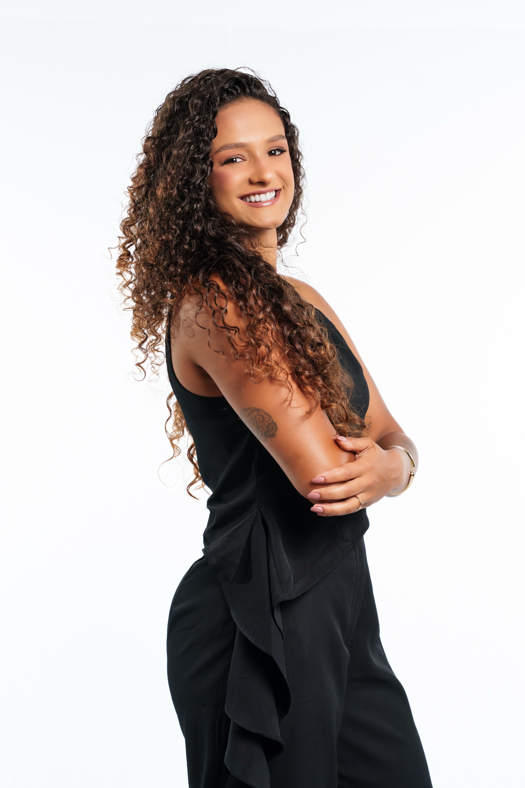
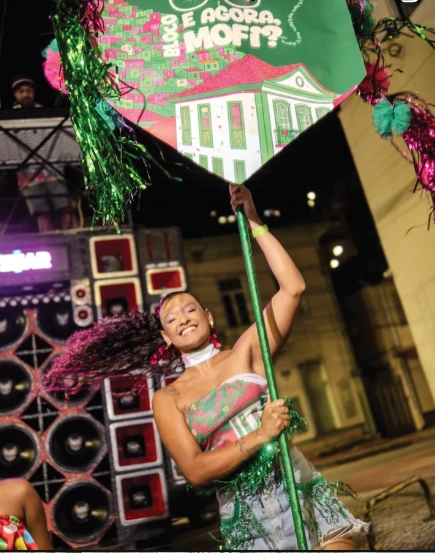
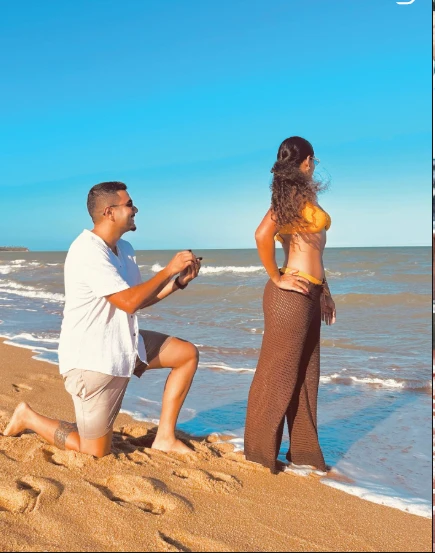
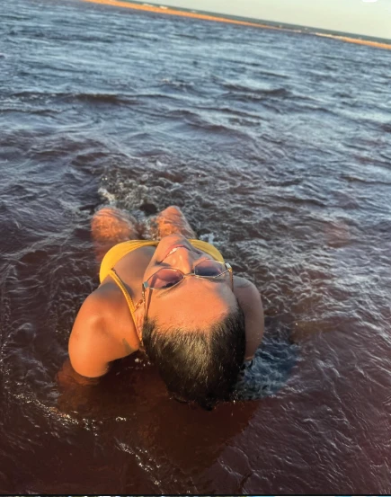

UM OLHAR PRÓPRIO.
MUITAS POSSIBILIDADES.
Malu. Naturalmente criativa.

Social Media
Storymaker
Videomaker Móbile
01 / MUITO PRAZER, MALU
Várias skins.
A mesma essência.
Humor, energia e muita vontade de fazer acontecer. Eu levo a vida para o conteúdo — e dou vida à presença da sua marca.
UM POUCO DE CADA VERSÃO DE MIMDESLIZE PARA EXPLORAR ↔
02 / O QUE EU FAÇO 01 — SOCIAL MEDIA
Naturalidade
virou estratégia.
MALU / NOTAS CRIATIVAS
Não tenha vergonha
de aparecer.
UM LEMBRETE PRA SUA MARCA
Poste algo hoje.
Amanhã você vai
agradecer por ter
se movido.
PRESENÇA NO AGORA 02 — STORYMAKER
O momento
passa.
A história
fica.
Bastidores, encontros, detalhes. Um olhar atento para transformar a energia de cada experiência em conteúdo espontâneo.
EVENTOS / BASTIDORES / EXPERIÊNCIAS


A VIDA EM PRIMEIRO PLANO 03 — VIDEOMAKER MÓBILE
IDEIA. CAPTAÇÃO. EDIÇÃO.Um olhar.
DA IDEIA AO REEL.Um olhar.
Muito movimento.
Vídeos pensados para o celular, com ritmo, intenção e a personalidade da sua marca.
Ser natural
é o melhor
caminho.
Entender sua marca. Encontrar o seu jeito.
E colocar movimento no que estava só no planejamento.